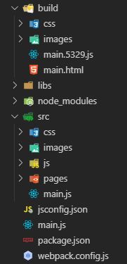

webpack 前端打包工具, 开发人员要面对的路径主要是: 打包前的路径(开发环境路径)和打包后的路径(生产环境路径)
在webpack.config.js中配置的output.path, output.publicPath, 以及各种插件, loader中的outputPath, publicPath, 这些都是针对的打包后的路径
我们编写的源代码中(一般存放在src目录下面的js, html, css)会引用各种资源文件, 这些资源文件的路径都是打包前的路径, 这些路径都是和项目目录结构有关
举例说明

上面是项目的基本结构,
打包前路径:
如果我们main.js中引入样式文件和图片文件应该这样写
import myimg from './images/图片.png'
import "./css/样式.scss";
这里的路径都是基于项目结构的, 当main.js文件要引用资源的时候, 就以main.js路径为起点.来写资源文件的路径. 引用js文件也一样, 只是node_modules中的文件在引用时可以省略node_modules目录的路径, 这是node的规则.
css样式文件中资源的引用也一样, 以要编写的css文件为起点,来写资源文件的路径.
打包后路径:
打包后的文件就是要部署到web服务器上的, 所以这里的路径分两种, 一种是文件在web服务器上的物理路径, 还一种就是用户访问的网站路径.
还是以上面的项目结构来说
build目录种存放的就是打包后的文件, build中的目录结构在某种程度上(只是某种程度上)就是web服务器上的目录结构.这些目录结构主要是由output.path及插件和loader中的outputPath属性来指定的.
output.publicPath及插件和loader中的publicPath默认为空字符"", 当用户访问网站的路径和web服务器的物理路径一一对应的时候publicPath不设置是没有问题, 当用户访问的网站路径和web服务器物理路径不是一一对应的时候, 换句话说就是web服务器设置了路径重写, 这时就需要设置publicPath, 设置publicPath后, 用户访问网站的路径就变成了 publicPath+outputPath, 这个可以从生产文件中的资源路径来验证
另外, 插件和loader中的publicPath会覆盖output.publicPath的设置